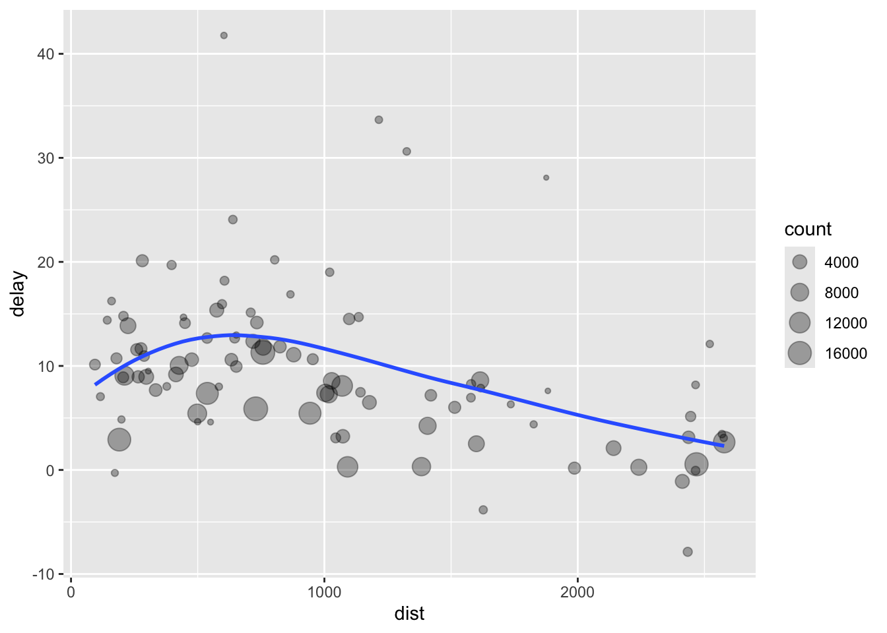

Capítulo10 Transformación: Rangos y más
## [1] "2024-10-03"10.1 Funciones en este modulo
- min_rank() # asigna valores de rangos a los valores originales
- row_number() # asigna valores de rangos a los valores originales
- desc() # ordena los valores de mayor a menor
- rank() # asigna valores de rangos a los valores originales
- first()
- dense_rank()
- percent_rank()
- cume_dist()
- rollmean()
10.2 Pruebas no paraméticas
La pruebas no paramétricas no son basado en distribución normal y los indices como promedio, desviación estándar no se usan.
10.3 min_rank() y # min_rank(desc())
Asignar valores de rangos a los valores originales o de más grande a meas pequeño o vise versa.
## [1] 22 1 36 46 7 39## # A tibble: 10 × 1
## value
## <int>
## 1 22
## 2 1
## 3 36
## 4 46
## 5 7
## 6 39
## 7 34
## 8 10
## 9 24
## 10 30df %>%
dplyr::select(value) %>%
mutate(rango_minimo=min_rank(value)) %>%
mutate(rango_min_desc=min_rank(desc(value)) )## # A tibble: 10 × 3
## value rango_minimo rango_min_desc
## <int> <int> <int>
## 1 22 4 7
## 2 1 1 10
## 3 36 8 3
## 4 46 10 1
## 5 7 2 9
## 6 39 9 2
## 7 34 7 4
## 8 10 3 8
## 9 24 5 6
## 10 30 6 510.4 row_number()
Qué hace la función row_number?
## [1] 10 21 22 NA 5 4## # A tibble: 6 × 1
## value
## <dbl>
## 1 10
## 2 21
## 3 22
## 4 NA
## 5 5
## 6 4## # A tibble: 6 × 2
## value row
## <dbl> <int>
## 1 10 3
## 2 21 4
## 3 22 5
## 4 NA NA
## 5 5 2
## 6 4 110.5 dense_rank()
## # A tibble: 6 × 1
## value
## <dbl>
## 1 10
## 2 12
## 3 12
## 4 NA
## 5 51
## 6 4df %>%
dplyr::select(value) %>%
mutate(dense=dense_rank(value)) # equivalente a rank, NOTA que los NA no son asignado un valor## # A tibble: 6 × 2
## value dense
## <dbl> <int>
## 1 10 2
## 2 12 3
## 3 12 3
## 4 NA NA
## 5 51 4
## 6 4 110.6 la función percent_rank()
## [1] 1 2 2 NA 5 4## # A tibble: 6 × 1
## value
## <dbl>
## 1 1
## 2 2
## 3 2
## 4 NA
## 5 5
## 6 4df %>%
dplyr::select(value) %>%
mutate(porcentaje_rank=percent_rank(value)) # equivalente a rank, Un número entre a 0 y 1 calculado haciendo una re-escala de los valores usando min_rank to [0, 1]. NOTA que el valor más pequeño es reasignado un valor de 0 y el más grande un valor de 1. ## # A tibble: 6 × 2
## value porcentaje_rank
## <dbl> <dbl>
## 1 1 0
## 2 2 0.25
## 3 2 0.25
## 4 NA NA
## 5 5 1
## 6 4 0.7510.7 la función percent_rank() sin NA
## # A tibble: 7 × 1
## value
## <int>
## 1 22
## 2 1
## 3 36
## 4 46
## 5 7
## 6 39
## 7 34## # A tibble: 7 × 2
## value porc2
## <int> <dbl>
## 1 22 0.333
## 2 1 0
## 3 36 0.667
## 4 46 1
## 5 7 0.167
## 6 39 0.833
## 7 34 0.510.8 la función cume_dist()
Es la suma cumulativa de los rangos
## [1] 1 2 3 NA 5 4 10 8## # A tibble: 8 × 1
## value
## <dbl>
## 1 1
## 2 2
## 3 3
## 4 NA
## 5 5
## 6 4
## 7 10
## 8 8## # A tibble: 8 × 2
## value rangos_cumulativo
## <dbl> <dbl>
## 1 1 0.143
## 2 2 0.286
## 3 3 0.429
## 4 NA NA
## 5 5 0.714
## 6 4 0.571
## 7 10 1
## 8 8 0.857- Ejercicios:
Hacer los ejercicios en la sección 5.5.2 del libro en español
Encuentra los 10 vuelos más retrasados utilizando una función de ordenamiento. ¿Cómo quieres manejar los empates? Lee atentamente la documentación de min_rank().
## [1] "anio" "mes" "dia"
## [4] "horario_salida" "salida_programada" "atraso_salida"
## [7] "horario_llegada" "llegada_programada" "atraso_llegada"
## [10] "aerolinea" "vuelo" "codigo_cola"
## [13] "origen" "destino" "tiempo_vuelo"
## [16] "distancia" "hora" "minuto"
## [19] "fecha_hora"vuelos%>%
dplyr::select(atraso_salida, aerolinea)%>%
arrange(desc(atraso_salida))%>%
mutate(mas_atrados=min_rank(desc(atraso_salida))) %>%
head(n=10)## # A tibble: 10 × 3
## atraso_salida aerolinea mas_atrados
## <dbl> <chr> <int>
## 1 1301 HA 1
## 2 1137 MQ 2
## 3 1126 MQ 3
## 4 1014 AA 4
## 5 1005 MQ 5
## 6 960 DL 6
## 7 911 DL 7
## 8 899 DL 8
## 9 898 DL 9
## 10 896 AA 10## [1] "anio" "mes" "dia"
## [4] "horario_salida" "salida_programada" "atraso_salida"
## [7] "horario_llegada" "llegada_programada" "atraso_llegada"
## [10] "aerolinea" "vuelo" "codigo_cola"
## [13] "origen" "destino" "tiempo_vuelo"
## [16] "distancia" "hora" "minuto"
## [19] "fecha_hora"## # A tibble: 10 × 20
## anio mes dia horario_salida salida_programada atraso_salida
## <int> <int> <int> <int> <int> <dbl>
## 1 2013 12 7 2040 2123 -43
## 2 2013 2 3 2022 2055 -33
## 3 2013 11 10 1408 1440 -32
## 4 2013 1 11 1900 1930 -30
## 5 2013 1 29 1703 1730 -27
## 6 2013 8 9 729 755 -26
## 7 2013 10 23 1907 1932 -25
## 8 2013 3 30 2030 2055 -25
## 9 2013 3 2 1431 1455 -24
## 10 2013 5 5 934 958 -24
## # ℹ 14 more variables: horario_llegada <int>, llegada_programada <int>,
## # atraso_llegada <dbl>, aerolinea <chr>, vuelo <int>, codigo_cola <chr>,
## # origen <chr>, destino <chr>, tiempo_vuelo <dbl>, distancia <dbl>,
## # hora <dbl>, minuto <dbl>, fecha_hora <dttm>, rango_minimo <int>10.9 Resúmenes con summarise() by group using group_by()
## # A tibble: 1 × 1
## delay
## <dbl>
## 1 12.6## # A tibble: 1 × 1
## delay
## <dbl>
## 1 12.6by_day <- group_by(flights, year, month, day)
summarise(by_day, delay = mean(dep_delay, na.rm = TRUE))## # A tibble: 365 × 4
## # Groups: year, month [12]
## year month day delay
## <int> <int> <int> <dbl>
## 1 2013 1 1 11.5
## 2 2013 1 2 13.9
## 3 2013 1 3 11.0
## 4 2013 1 4 8.95
## 5 2013 1 5 5.73
## 6 2013 1 6 7.15
## 7 2013 1 7 5.42
## 8 2013 1 8 2.55
## 9 2013 1 9 2.28
## 10 2013 1 10 2.84
## # ℹ 355 more rows## # A tibble: 365 × 4
## # Groups: year, month [12]
## year month day delay
## <int> <int> <int> <dbl>
## 1 2013 1 1 11.5
## 2 2013 1 2 13.9
## 3 2013 1 3 11.0
## 4 2013 1 4 8.95
## 5 2013 1 5 5.73
## 6 2013 1 6 7.15
## 7 2013 1 7 5.42
## 8 2013 1 8 2.55
## 9 2013 1 9 2.28
## 10 2013 1 10 2.84
## # ℹ 355 more rows10.10 La aerolinea peor en atraso de salidas
flights %>%
group_by(carrier) %>%
summarise(delay = mean(dep_delay, na.rm = TRUE)) %>%
arrange(desc(delay))## # A tibble: 16 × 2
## carrier delay
## <chr> <dbl>
## 1 F9 20.2
## 2 EV 20.0
## 3 YV 19.0
## 4 FL 18.7
## 5 WN 17.7
## 6 9E 16.7
## 7 B6 13.0
## 8 VX 12.9
## 9 OO 12.6
## 10 UA 12.1
## 11 MQ 10.6
## 12 DL 9.26
## 13 AA 8.59
## 14 AS 5.80
## 15 HA 4.90
## 16 US 3.78## # A tibble: 336,776 × 19
## # Groups: dest [105]
## year month day dep_time sched_dep_time dep_delay arr_time sched_arr_time
## <int> <int> <int> <int> <int> <dbl> <int> <int>
## 1 2013 1 1 517 515 2 830 819
## 2 2013 1 1 533 529 4 850 830
## 3 2013 1 1 542 540 2 923 850
## 4 2013 1 1 544 545 -1 1004 1022
## 5 2013 1 1 554 600 -6 812 837
## 6 2013 1 1 554 558 -4 740 728
## 7 2013 1 1 555 600 -5 913 854
## 8 2013 1 1 557 600 -3 709 723
## 9 2013 1 1 557 600 -3 838 846
## 10 2013 1 1 558 600 -2 753 745
## # ℹ 336,766 more rows
## # ℹ 11 more variables: arr_delay <dbl>, carrier <chr>, flight <int>,
## # tailnum <chr>, origin <chr>, dest <chr>, air_time <dbl>, distance <dbl>,
## # hour <dbl>, minute <dbl>, time_hour <dttm>delay <- summarise(by_dest,
count = n(),
dist = mean(distance, na.rm = TRUE),
delay = mean(arr_delay, na.rm = TRUE))
delay## # A tibble: 105 × 4
## dest count dist delay
## <chr> <int> <dbl> <dbl>
## 1 ABQ 254 1826 4.38
## 2 ACK 265 199 4.85
## 3 ALB 439 143 14.4
## 4 ANC 8 3370 -2.5
## 5 ATL 17215 757. 11.3
## 6 AUS 2439 1514. 6.02
## 7 AVL 275 584. 8.00
## 8 BDL 443 116 7.05
## 9 BGR 375 378 8.03
## 10 BHM 297 866. 16.9
## # ℹ 95 more rows#> `summarise()` ungrouping output (override with `.groups` argument)
delay <- filter(delay, count > 20, dest != "HNL")
# It looks like delays increase with distance up to ~750 miles
# and then decrease. Maybe as flights get longer there's more
# ability to make up delays in the air?
ggplot(data = delay, aes(x = dist, y = delay)) +
geom_point(aes(size = count), alpha = 1/3) +
geom_smooth(se = FALSE)
## [1] "dest" "count" "dist" "delay"## # A tibble: 6 × 4
## dest count dist delay
## <chr> <int> <dbl> <dbl>
## 1 ABQ 254 1826 4.38
## 2 ACK 265 199 4.85
## 3 ALB 439 143 14.4
## 4 ATL 17215 757. 11.3
## 5 AUS 2439 1514. 6.02
## 6 AVL 275 584. 8.00ggplot(data = delay, aes(x = dist, y = delay, label=dest)) +
geom_point() +
geom_smooth(se = FALSE)+
geom_text(size=2,aes(label=dest), hjust=1, vjust=-1)
Rolling average:
https://stackoverflow.com/questions/743812/calculating-moving-average
## # A tibble: 10 × 1
## day
## <int>
## 1 1
## 2 2
## 3 3
## 4 4
## 5 5
## 6 6
## 7 7
## 8 8
## 9 9
## 10 10# cma = centered moving average
# tma = trailing moving average
some_data %>%
mutate(cma = rollmean(day, k = 3, fill = NA)) %>%
mutate(tma = rollmean(day, k = 3, fill = NA, align = "right")) %>%
mutate(lma = rollmean(day, k = 3, fill = NA, align = "left")) %>%
mutate(cmax=rollmax(day, k=30, fill=NA))## # A tibble: 10 × 5
## day cma tma lma cmax
## <int> <dbl> <dbl> <dbl> <lgl>
## 1 1 NA NA 2 NA
## 2 2 2 NA 3 NA
## 3 3 3 2 4 NA
## 4 4 4 3 5 NA
## 5 5 5 4 6 NA
## 6 6 6 5 7 NA
## 7 7 7 6 8 NA
## 8 8 8 7 9 NA
## 9 9 9 8 NA NA
## 10 10 NA 9 NA NA## # A tibble: 10 × 1
## day
## <int>
## 1 1
## 2 2
## 3 3
## 4 4
## 5 5
## 6 6
## 7 7
## 8 8
## 9 9
## 10 10